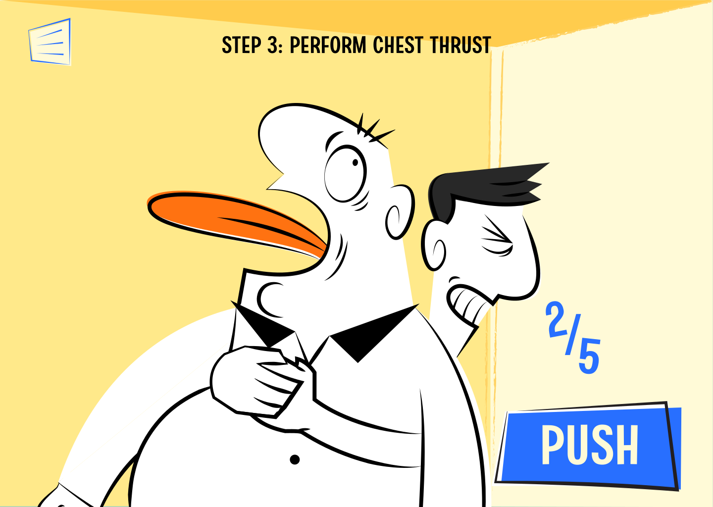
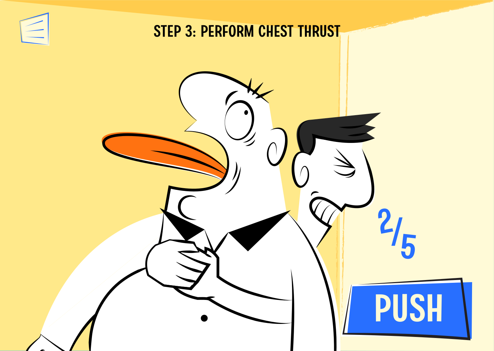

INTERACTION
How to save a choking person
Abstract
Choking occurs when a foreign object obstructs the airway, potentially leading to unconsciousness within 3–5 minutes and, in severe cases, brain damage or death due to oxygen deprivation. Immediate first aid, commonly involving abdominal thrusts and back blows, is crucial to saving lives. However, many people lack awareness of this life-saving procedure, and the standard method is not always suitable for specific groups, such as pregnant individuals or those with obesity. To address this gap, our project develops an interactive infographic tutorial designed to raise public awareness and provide step-by-step, adaptable guidelines for responding to choking emergencies.
Storyline

The tutorial begins with the main character (the user) starting their day like any other, grabbing a fast food meal on a regular morning. Just as they happily receive their order, chaos strikes: a man nearby suddenly starts choking on his food. In that critical moment, the user is forced to act quickly — either step in to save him, or watch as he collapses.
 

Welcome back
Abstract
In this project, I want to express the feeling that I have recently had. The feeling of EMPTINESS. The hole that lingers in me and is eating me alive, time runs funny, sometimes it feels like already stopped, but sometimes it's really fast. At some point, I feel like the world is not real anymore; it feels like a dream, everything is just repeating, and something just feels slightly off. From that feeling, I believed that the concept "Liminal space" can represent the best for this project. Liminal space will have the vibe of repeated emptiness, and too perfect to be real; it can be a memory, a dream. It can also be an old website, a Wallpaper, the loading bar that never reaches 100%, a melody, or a sudden silence
Concept
A liminal space, literally meaning “threshold” (from the Latin limen), is the space in between. It’s not where you were, and not yet where you’re going. It’s the hallway between rooms, the pause between breaths, the moment after something ends but before you understand what begins